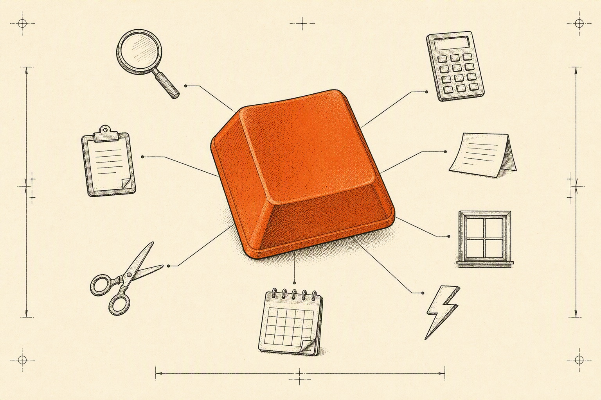

Zappale field manual
The shortest path across your Mac.
Zappale is a keyboard-first launcher. Summon one small palette and everything you reach for — apps, arithmetic, clippings, snippets, windows — sits a few keystrokes away. Native, open source, no account.

Chapter 01What it does
A small palette with a long reach.
Zappale replaces a drawer of small utilities with one search field. Every capability below is built in, and none of them gets in the way until you call for it.
-
§ 1.1
⌥ SpaceApp launching
Two letters usually find the app you mean. Favorites stay pinned, running apps are marked, and quitting is a keystroke rather than a hunt through menus.
-
§ 1.2
inlineArithmetic & conversions
Sums, percentages, units and date math resolve as you type, so a scratch calculation never needs a second app.
-
§ 1.3
on-deviceClipboard recall
Text, links, images and colors you copy are kept on your Mac, indexed and searchable, ready to paste again.
-
§ 1.4
any appSnippets
Short keywords expand into the paragraphs you type every day, with fill-in placeholders for the parts that change.
-
§ 1.5
no mouseWindow arrangement
Halves, thirds, centering and nudges — move and size windows entirely from the keyboard, no dragging involved.
-
§ 1.6
⌘ 1–0Quick links
The sites and searches you visit often, opened straight from the palette instead of a tab graveyard.
-
§ 1.7
type itSymbols & emoji
Search the whole set by name; the ones you actually use rise to the top over time.
-
§ 1.8
built inSystem actions
Lock, sleep, empty the trash, eject a disk — the menu-bar errands, done without the menu bar.
…plus the small comforts: file search, floating notes, aliases, input-source switching, and a single-file backup of your setup.
Chapter 02Principles
Quiet by design.
Three rules the app is built around, and the whole privacy story in practice.
Local by default
Your clippings, snippets and settings live on your Mac. There is no account to create and no copy of your data anywhere else.
Silent unless invited
No usage analytics and no behavioural tracking. The app does its work on your machine; the network is not part of the loop.
Permission at the moment of use
Features ask for macOS access the first time you actually use them — not in a wall of dialogs on first launch.
Wondering about a specific permission? The repository is the source of truth.
Chapter 03Keyboard
The keyboard is the interface.
One shortcut summons the palette; from there everything is a key away. Shortcuts follow key positions, so non-US layouts work unchanged.
Chapter 04Getting started
Three steps and you're in.
Summon it
Press ⌥ Space. A small palette appears in the middle of your screen — that is the whole interface.
Type two letters
That is genuinely the entire tutorial. Everything else waits where you can find it, not in your way.
Free, open source, built in public.
If Zappale earns a place in your workflow, a star on GitHub is what keeps it moving.